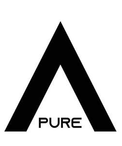
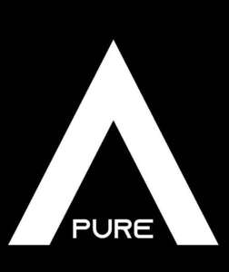

Trade Mark Journal No.2025/030 25 July 2025
UK00004233420 14 July 2025 (25)
Mark 1

Mark 2

- Class 25
- Clothing; Ready-to-wear clothing; Clothes; Maternity clothing; Jerseys [clothing]; Denims [clothing]; Shorts [clothing]; Leather clothing; Hoods [clothing]; Windproof clothing; Embroidered clothing; Wristbands [clothing]; Belts [clothing]; Belts for clothing; Waterproof clothing; Casual clothing; Jackets being sports clothing; Jackets (Stuff -) [clothing]; Stuff jackets [clothing]; Bottoms [clothing]; Playsuits [clothing]; Clothing for leisure wear; Ready-made clothing; Trunks being clothing; Infant clothing; Leisure clothing; Clothing for sports; Sports clothing; Athletic clothing; Clothing for children; Muffs [clothing]; Bodies [clothing]; Clothing for babies; Tops [clothing]; Clothing for infants; Weatherproof clothing; Water-resistant clothing; Beach clothing; Thermal clothing; Men’s clothing; Jeans; Denim jeans; Denim pants; Blue jeans; Leggings [trousers]; Trousers shorts; Denim jackets; Pants; Trousers; Corduroy pants; Sweatpants; Chino pants; Corduroy trousers; Dress pants; Capri pants; Khakis; Turtleneck shirts; Coats of denim; Denim coats; Corduroy shirts; Leather pants; Casual trousers; Trousers of leather; Snowboard trousers; Maternity pants; Slacks; Nappy pants [clothing]; Dress shirts; Babies’ pants [underwear]; Babies’ pants [clothing]; Stretch pants; Dungarees; Jogging pants; Boy shorts [underwear]; Trouser socks; Shorts; Camouflage pants; Yoga pants; Shirts; Waterproof pants; Golf trousers; Cargo pants; Sweat pants; Ski trousers; Men’s dress socks; Trousers for sweating; Turtleneck sweaters; Short-sleeved shirts; Dress shoes; Ski pants; Maternity shorts; Longsleeved shirts; Jogging bottoms [clothing]; Waterproof trousers; Casual shirts; V-neck sweaters; Baby pants; Cycling pants; Pants (Am.); Riding trousers; Collared shirts; Tracksuit bottoms; Lounge pants; Pirate pants; Shoes for casual wear; Turtleneck tops; Men’s and women’s jackets, coats, trousers, vests; Open-necked shirts; Maternity leggings; Sports pants; Weatherproof pants; Sleep pants; Sweatshorts; Bib shorts; Overalls; Short trousers; Short-sleeved T-shirts; Short-sleeve shirts; Fleece shorts; Pajama bottoms; Blouses; Shirts for suits; Button-front aloha shirts; Tank-tops; Warm-up pants; Mock turtleneck shirts; Maternity shirts; Horse-riding pants; Hunting pants; Culottes; Sneakers; Knit shirts; Gabardines [clothing]; Yoga shirts; Sweatshirts; Snow pants; Nurse pants; Underwear; Sleeveless jackets; Shirt yokes; Yokes (Shirt -); Tap pants; Leather dresses; Jackets [clothing]; Rain trousers; Gym shorts; Tracksuit tops; Men’s underwear; Turtleneck pullovers; Pockets for clothing; Sweat shorts; Quilted jackets [clothing]; T-shirts; Polo shirts; Infants’ trousers; Shirts and slips; Camouflage shirts; Skirt suits; Ramie shirts; Bermuda shorts; Trousers for children; Breeches for wear; Sweaters; Sweat shirts; Culotte skirts; Leather shoes; Suede jackets; Tops; Tank tops; Halter tops; Crop tops; Baselayer tops; Knitted tops; Hooded tops; Knit tops; Fleece tops; Vest tops; Chemise tops; Tube tops; Maternity tops; Jogging tops; Yoga tops; Baby tops; Warm-up tops; Cycling tops; Rugby tops; Polo knit tops; Top hats; Baselayer bottoms; Coats (Top -); Top coats; Sweat bottoms; Yoga bottoms; Jogging bottoms; Baby bottoms; Skirts; Pleated skirts; Cardigans; Camisoles; Collars for dresses; Jumpers [sweaters]; Sleeved jackets; Roll necks [clothing]; Button down shirts; Shirt fronts; Straps for bras; Sundresses; Jockstraps [underwear]; Briefs [underwear]; Sweat-absorbent underclothing [underwear]; Trunks [underwear]; Sweatabsorbent underwear; Underwear (Anti-sweat -); Anti-sweat underwear; Maternity underwear; Disposable underwear; Knitted underwear; Undergarments; Underwear for women; Thermal underwear; Underpants; Functional underwear; Underclothes; Women’s underwear; Long underwear; Gussets for underwear [parts of clothing]; Panties; Teddies [undergarments]; Ladies’ underwear; Lingerie; Slips [undergarments]; Knickers; Underpants for babies; Gstrings; Thongs; Underclothing; Maternity lingerie; Teddies [underclothing]; Thong sandals; Gloves [clothing]; Gloves as clothing; Pajamas; Undershirts; Underclothing (Anti-sweat -); Anti-sweat underclothing; Corsets [underclothing]; Sweat-absorbent underclothing; Socks and stockings; Silk clothing; Bodices [lingerie]; Pyjamas; Braces for clothing [suspenders]; Latex clothing; Corsets [clothing, foundation garments]; Chaps (clothing); Bra straps [parts of clothing]; Anti-perspirant socks; Drawers [clothing]; Drawers as clothing; Braces [suspenders] for clothing / Suspenders [braces] for clothing; Slips [underclothing]; Gussets for tights [parts of clothing]; Swimsuits; Hosiery; Bandeaux [clothing]; Beach clothes; Slips [clothing]; Nipple pasties being underclothing; Sweat-absorbent socks; Bed socks; Maillots [hosiery]; Bras; Woolen clothing; Aprons [clothing]; Pantyhose; Moisture-wicking sports pants; Mitts [clothing]; Womens’ undergarments; Nightwear; Swimwear; Negligees; Shapewear; Strapless bras; Strapless brassieres; Sleepwear; Bridal garters; Bikinis; Maternity sleepwear; Stockings; Gussets for stockings [parts of clothing]; Body stockings; Corsets [foundation clothing]; Corsets being foundation clothing; Underclothing for women; Nightgowns; Bra straps; Bralettes; Brassieres; Bustiers; Beachwear; Knitwear [clothing]; Peignoirs; Nighties; Fitted swimming costumes with bra cups; Plush clothing; Loungewear; Nursing bras; Maternity dresses; Stockings (Sweatabsorbent -); Sweat-absorbent stockings; Stockings [sweat-absorbent]; Boas [clothing]; Veils [clothing]; Cashmere clothing; Girdles [corsets]; Chemises; Clothing of leather; Leather (Clothing of - ); Bridal gowns; Corsets; Dresses; Dance clothing; Linen clothing; Headbands [clothing]; Headbands for clothing; Bathing costumes for women; Sports bras; Pique shirts; Rugby shirts; Football shirts; Hooded sweat shirts; Woven shirts; Aloha shirts; Soccer shirts; Golf shirts; Night shirts; Sport shirts; Sleeveless jerseys; Sleep shirts; Tennis shirts; Fishing shirts; Under shirts; Tee-shirts; Hunting shirts; Sports shirts with short sleeves; Sports shirts; Moisture-wicking sports shirts; Printed t-shirts; American football shirts; Bib overalls for hunting; Polo sweaters; Bib tights; Sleeveless pullovers; Padded shirts for athletic use; Rugby shorts; Romper suits; Collars [clothing]; Mock turtleneck sweaters; Golf shorts; Short overcoat for kimono (haori); Bibs, sleeved, not of paper; Undershirts for kimonos (juban); Pyjamas [from tricot only]; Bibs, not of paper; Clothing for wear in wrestling games; Baby bibs [not of paper]; Golf clothing, other than gloves; Snap crotch shirts for infants and toddlers; Maternity wear; Casual wear; Bridesmaids wear; Formal wear; Ladies wear; Rain wear; Exercise wear; Evening wear; Sports wear; Ski wear; Dresses for evening wear; Leisure wear; Head wear; Tennis wear; Surf wear; Children’s wear; Face masks [fashion wear]; Formal evening wear; Swim wear for children; Clothing for wear in judo practices; Paper hats for wear by nurses; Swim wear for gentlemen and ladies; Paper hats for wear by chefs; Dress shields; Shields (Dress -); Dress suits; Korean outer jackets worn over basic garment [Magoja]; Parts of clothing, footwear and headgear; Party hats [clothing]; Fancy dress costumes; Braces for clothing; Capes (clothing); Leather belts [clothing]; Garments for protecting clothing; Fabric belts [clothing]; Visors [clothing]; Jogging outfits; Collar liners for protecting clothing collars; Kerchiefs [clothing]; Gussets for bathing suits [parts of clothing]; Camouflage gloves; Gloves for apparel; Tights; Leggings [leg warmers]; Footless tights; Woollen tights; Bodysuits; Athletic tights; Booties; Legwarmers; Skorts; Footless socks; Leotards; Yoga socks; Lace boots; Gymwear; Yoga shoes; Sandals; Anklets [socks]; Men’s sandals; Pinafore dresses; Jumper dresses; Gussets for leotards [parts of clothing]; Bridesmaid dresses; Wedding dresses; Cocktail dresses; Costumes for use in children’s dress up play; Dressing gowns; Evening dresses; Shift dresses; Nurse dresses; Wedding gowns; Tennis dresses; Pleated skirts for formal kimonos (hakama); Women’s ceremonial dresses; Gowns; Frock coats; Imitation leather dresses; Sashes for wear; Christening gowns; Ladies’ dresses; Bathing costumes; Cheongsams (Chinese gowns); Evening gowns; Wedding garters; Skating outfits; Dresses made from skins; Costumes; Sash bands for kimono (obi); Masquerade and halloween costumes; Masquerade costumes; Costumes (Masquerade -); Halloween costumes; Dinner suits; Ballet suits; Night gowns; Headgear for wear; Tennis skirts; Golf skirts; Underskirts; Trouser straps; Pantaloons; Blouson jackets; Miniskirts; Wind pants; Petticoats; Short petticoats; One-piece playsuits; Knee-high stockings; Trews; Jodhpurs; Waistcoats; Leather waistcoats; Waistcoats [vests]; Salopettes; Breeches; Knickerbockers; Leather jackets; Oilskins [clothing]; Overtrousers; Jackets; Camouflage jackets; Track pants; Shoes for leisurewear; Hoodies; Hooded sweatshirts; Hooded pullovers; Beanies; Fleece jackets; Tracksuits; Beanie hats; Fleece pullovers; Snowboard jackets; Balaclavas; Turtlenecks; Knit jackets; Pullovers; Parkas; Bandanas; Anoraks [parkas]; Sweat jackets; Jumpers [pullovers]; Fleece vests; Overshirts; Polar fleece jackets; Trenchcoats; Gilets; Hooded bathrobes; Scarves; Sheepskin jackets; Jumpsuits; Cowls [clothing]; Windcheaters; Casual jackets; Sweatsuits; Fur coats and jackets; Sports jackets; Bandanas [neckerchiefs]; Overcoats; Scarfs; Cashmere scarves; Stuff jackets; Fur jackets; Bandannas; Hats; Windproof jackets; Bomber jackets; Blazers; Toques [hats]; Mufflers [clothing]; Jerseys; Wind-resistant jackets; Padded jackets; Weatherproof jackets; Windshirts; Handwarmers [clothing]; Outerwear; Rainproof jackets; Long sleeve pullovers; Knitted clothing; Men’s socks; Jacket liners; Snowboard mittens; Crew neck sweaters; Wind-resistant vests; Waterproof jackets; Motorcycle jackets; Shell jackets; Reversible jackets; Ski jackets; Rain jackets; Riding jackets; Warm-up jackets; Dinner jackets; Wind jackets; Heavy jackets; Hunting jackets; Bed jackets; Smoking jackets; Light-reflecting jackets; Safari jackets; Down jackets; Track jackets; Fishing jackets; Long jackets; Quilted vests; Wind resistant jackets; Rainproof clothing; Fishermen’s jackets; Duffle coats; Camouflage vests; Leather suits; Suits of leather; Duffel coats; Leather coats; Motorcycle gloves; Waterproof boots; Fingerless gloves as clothing; Long sleeved vests; Fascinator hats; Bobble hats; Cloche hats; Bucket hats; Fur hats; Woolly hats; Baseball hats; Ski hats; Fake fur hats; Baseball caps and hats; Ushankas [fur hats]; Rain hats; Fashion hats; Sun hats; Mitres [hats]; Miters [hats]; Hats (Paper -) [clothing]; Paper hats [clothing]; Beach hats; Sports caps and hats; Small hats; Sedge hats (suge-gasa); Chef’s hats; Bonnets [headwear]; Caps [headwear]; Caps being headwear; Paper hats for use as clothing items; Fedoras; Knitted gloves; Clothing for horse-riding [other than riding hats]; Cap visors; Knitted caps; Headgear; Head scarves; Mittens; Headwear; Woollen socks; Sock suspenders; Leather headwear; Visors [hatmaking]; Visors [headwear]; Visors being headwear; Bucket caps; Valenki [felted boots]; Head sweatbands; Bootees (woollen baby shoes); Fur cloaks; Fishing headwear; Sun visors [headwear]; Skull caps; Gloves; Toe socks; Slipper socks; Face mask [clothing]; Sportswear; Menswear; Casualwear; Knitwear; Casual footwear; Coveralls; Leisurewear; Rainwear; Leisure footwear; Footwear; Work overalls; Leather garments; Woven clothing; Sports garments; Coats; Fur coats; Trench coats; Tail coats; Sheepskin coats; Pea coats; Suit coats; Winter coats; Light-reflecting coats; Dust coats; Cotton coats; House coats; Rain coats; Heavy coats; Sport coats; Down coats; Laboratory coats; Wind coats; Morning coats; Evening coats; Coats for men; White coats for hospital use; Coats made of cotton; Coats for women; Topcoats; Fur stoles; Stoles (Fur -); Clothing made of fur; Synthetic fur stoles; Foulards [clothing articles]; Articles of sports clothing; Japanese traditional clothing; Smart clothing; Clothing for martial arts; Articles of clothing; Footwear for women; Japanese style sandals of leather; Footwear for sports; Sports footwear; Kendo outfits; Clothing of imitations of leather; Leather (Clothing of imitations of - ); Furs [clothing]; Clothes for sports; Footwear for sport; Footwear for use in sport; Japanese style clogs and sandals; Clothing for gymnastics; Clothing for cycling; Footwear for snowboarding; Clothes for sport; Articles of clothing made of leather; Boxer shorts; Swim shorts; Cycling shorts; Boxing shorts; Tennis shorts; Sliding shorts; Board shorts; Padded shorts for athletic use; American football shorts; Boardshorts; Swim briefs; Boxer briefs; Sandals and beach shoes; Padded pants for athletic use; Shoes; Sneakers [footwear]; High-heeled shoes; Slip-on shoes; Rubber shoes; Snowboard shoes; Hidden heel shoes; Ballet shoes; Tennis shoes; Athletic shoes; Platform shoes; Basketball shoes; Wooden shoes; Roller shoes; Sport shoes; Waterproof shoes; Sports shoes; Soccer shoes; Hockey shoes; Running shoes; Canvas shoes; Jogging shoes; Hiking shoes; Walking shoes; Handball shoes; Dance shoes; Esparto shoes or sandals; Mountaineering shoes; Baseball shoes; Golf shoes; Flipflops for use as footwear; Riding shoes; Trainers [footwear]; Bowling shoes; Ankle boots; Heels; Wedge sneakers; Pumps [footwear]; Flat shoes; Footwear [excluding orthopedic footwear]; Athletic footwear; Footwear for men; Athletics footwear; Climbing footwear; Golf footwear; Fishing footwear; Beach footwear; Children’s footwear; Infant’s footwear; Footwear not for sports; Ladies’ footwear; Apres ski shoes; Leisure shoes; Footwear for men and women; Footwear made of vinyl; Athletics shoes; Cycling shoes; Skiing shoes; Gymnastic shoes; Boots for sports; Rugby shoes; Boots; Wellington boots; Snowboard boots; Snow boots; Hiking boots; Climbing boots [mountaineering boots]; Trekking boots; Winter boots; Mountaineering boots; Ski boots; Boots (Ski -); Rain boots; Walking boots; Riding boots; Hunting boots; Polo boots; Soccer boots; Horse-riding boots; Climbing boots; Rugby boots; Army boots; Desert boots; Football boots; Apres-ski boots; Work boots; Military boots; Boots for sport; Boots for motorcycling; Gym boots; Fishing boots; Motorcyclist boots; Baby boots; Rubber fishing boots; Waterproof boots for fishing; Ladies’ boots; After ski boots; Russian felted boots (Valenki); Infant’s boots; Sports [Boots for -]; Rain shoes; Leather slippers; Ski boot bags; Spiked running shoes; Hunting boot bags; Work shoes.
PURE AURA LTD